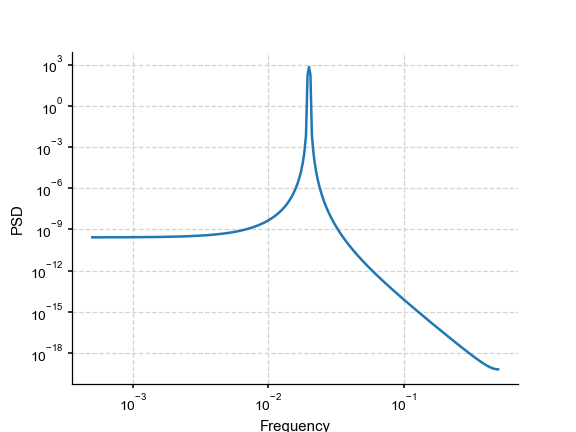

welch (pyleoclim.utils.spectral.welch)¶
-
pyleoclim.utils.spectral.welch(ys, ts, window='hann', nperseg=None, noverlap=None, nfft=None, return_onesided=True, detrend=None, sg_kwargs=None, gaussianize=False, standardize=False, scaling='density', average='mean')[source]¶ Estimate power spectral density using Welch’s method
Wrapper for the function implemented in scipy.signal.welch See https://docs.scipy.org/doc/scipy/reference/generated/scipy.signal.welch.html for details.
Welch’s method is an approach for spectral density estimation. It computes an estimate of the power spectral density by dividing the data into overlapping segments, computing a modified periodogram for each segment and averaging the periodograms.
- Parameters
ys (array) – a time series
ts (array) – time axis of the time series
window (string or tuple) –
- Desired window to use. Possible values:
boxcar
triang
blackman
hamming
hann (default)
bartlett
flattop
parzen
bohman
blackmanharris
nuttail
barthann
kaiser (needs beta)
gaussian (needs standard deviation)
general_gaussian (needs power, width)
slepian (needs width)
dpss (needs normalized half-bandwidth)
chebwin (needs attenuation)
exponential (needs decay scale)
tukey (needs taper fraction)
If the window requires no parameters, then window can be a string. If the window requires parameters, then window must be a tuple with the first argument the string name of the window, and the next arguments the needed parameters. If window is a floating point number, it is interpreted as the beta parameter of the kaiser window.
- npersegint
Length of each segment. If none, nperseg=len(ys)/2. Default to None This will give three segments with 50% overlap
- noverlapint
Number of points to overlap. If None, noverlap=nperseg//2. Defaults to None, represents 50% overlap
- nfft: int
Length of the FFT used, if a zero padded FFT is desired. If None, the FFT length is nperseg
- return_onesidedbool
If True, return a one-sided spectrum for real data. If False return a two-sided spectrum. Defaults to True, but for complex data, a two-sided spectrum is always returned.
- detrendstr
- If None, no detrending is applied. Available detrending methods:
None - no detrending will be applied (default);
linear - a linear least-squares fit to ys is subtracted;
constant - the mean of ys is subtracted
savitzy-golay - ys is filtered using the Savitzky-Golay filters and the resulting filtered series is subtracted from y.
emd - Empirical mode decomposition
- sg_kwargsdict
The parameters for the Savitzky-Golay filters. see pyleoclim.utils.filter.savitzy_golay for details.
- gaussianizebool
If True, gaussianizes the timeseries
- standardizebool
If True, standardizes the timeseries
- scaling{“density,”spectrum}
Selects between computing the power spectral density (‘density’) where Pxx has units of V**2/Hz and computing the power spectrum (‘spectrum’) where Pxx has units of V**2, if x is measured in V and fs is measured in Hz. Defaults to ‘density’
- average{‘mean’,’median’}
Method to use when averaging periodograms. Defaults to ‘mean’.
- Returns
res_dict – the result dictionary, including - freq (array): the frequency vector - psd (array): the spectral density vector
- Return type
dict
See also
pyleoclim.utils.spectral.periodogram()Estimate power spectral density using a periodogram
pyleoclim.utils.spectral.mtm()Retuns spectral density using a multi-taper method
pyleoclim.utils.spectral.lomb_scargle()Return the computed periodogram using lomb-scargle algorithm
pyleoclim.utils.spectral.wwz_psd()Return the psd of a timeseries using wwz method.
pyleoclim.utils.filter.savitzy_golay()Filtering using Savitzy-Golay
pyleoclim.utils.tsutils.detrend()Detrending method
References
Welch, “The use of the fast Fourier transform for the estimation of power spectra: A method based on time averaging over short, modified periodograms”, IEEE Trans. Audio Electroacoust. vol. 15, pp. 70-73, 1967.
Examples
>>> from pyleoclim import utils >>> import matplotlib.pyplot as plt >>> import numpy as np >>> # Create a signal >>> time = np.arange(2001) >>> f = 1/50 >>> signal = np.cos(2*np.pi*f*time) >>> # Spectral Analysis >>> res = utils.welch(signal, time) >>> # plot >>> fig = plt.loglog( ... res['freq'], ... res['psd']) >>> plt.xlabel('Frequency') >>> plt.ylabel('PSD') >>> plt.show()
(Source code, png)

{kind=link}